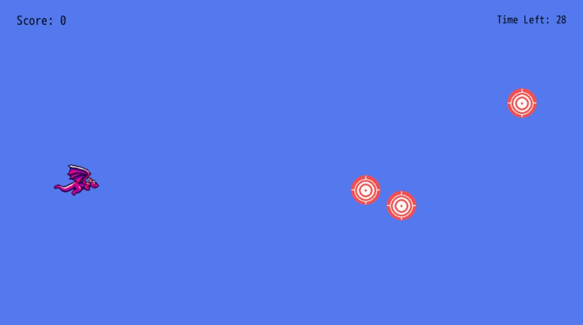

Background
We're eight chapters in and haven't even touched upon a simple and useful piece of functionality that DragonRuby GTK gives us: drawing rectangles! Rectangles are great for backgrounds, text boxes and more. Layer some sprites on top, and you can get pretty fancy.
Blue Sky
Up until now, our dragon has been flying around in a gray sky. Let's make the sky blue by drawing a rectangle behind our sprites and text.
DragonRuby provides args.outputs.solids to easily display filled rectangles.
At the top of #tick, below where we start the music, create a solid rectangle that's the size of the screen and placed at 0, 0:
def tick args
if args.state.tick_count == 1
args.audio[:music] = { input: "sounds/flight.ogg", looping: true }
end
args.outputs.solids << {
x: 0,
y: 0,
w: args.grid.w,
h: args.grid.h,
r: 92,
g: 120,
b: 230,
}
We're familiar with a lot of the shape hash keys for the position and size, but r, g, and b are new. They specify the values for the (r)ed, (g)reen, and (b)lue color values for the rectangle we're drawing. Their values can be set to anything between 0 and 255, inclusive. Adjust the values to see a different color displayed. The higher the value for a given color, the more it'll be part of the mix. So our color has a blue of 230, meaning blue comes through more than the others. You can also specify a, the alpha value, between 0 and 100, inclusive, to get transparency in our color.
Now we've got our dragon flying over a blue sky. That looks quite a bit better.

Extra Credit
- Make (or find) some cloud sprites and render those in the sky. Put them in the
args.outputs.spritesbefore the other sprites to have them render behind. - Move the clouds, randomly placing at a different position and with a different size when they go off the screen.
- Draw some more rectangles under the score and timer to make them easier to read.
What's Next
We've got one more major piece of polish to implement—animation! Let's make our dragon flap their wings because they're flying in the sky.